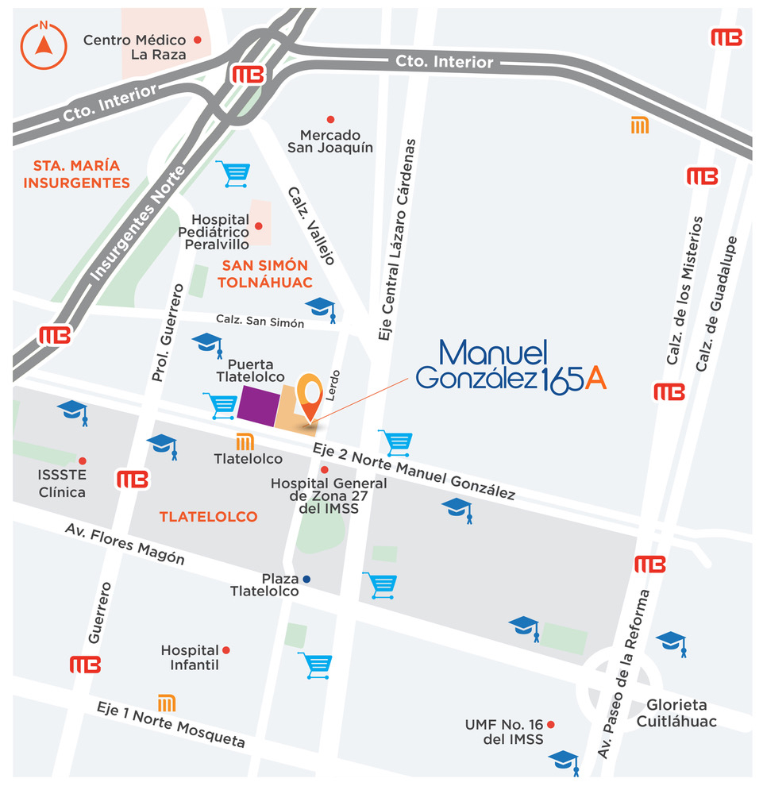

- Hospital General IMSS Zona 27
- Hospital Pediátrico Peralvillo
- IMSS La Raza
- Issste Centro Hospitalario
- Walmart Tlatelolco
- Mercado San Joaquín
- Bodega Aurrera Express
- Soriana Hiper Tlatelolco
- Puerta Tlatelolco
- Plaza Tlatelolco
- Fórum Buenavista
- Plaza Ministerios
- Centro Comercial las Vegas
En esta zona se ubican decenas de escuelas primarias y secundarias, así como varios bachilleratos y universidades.
- Escuela Primaria ISSSTE
- Escuela Primaria Francisco Díaz Covarrubias
- Colegio de las Tres Culturas
- Escuela Primaria Fray Melchor de Talamantes
- Universidad Tecnológica de México
- Centro Universitario para el Liderazgo y Desarrollo Profesional
- La Casa de Toño
- Sushi Itto Puerta Tlatelolco
- Toks
- Wings Factory Tlatelolco
- Restaurante La Terraza de Los Amigos
- Cinépolis
- Gran Salón de la Ciudad de México
- Centro de Convenciones Tlatelolco
- Plaza de las Tres Culturas
- Jardín la Pera
- Jardín de la Paz


Metro Tlatelolco

Centro comercial puerta Tlatelolco

Templo de San Simón

Centro de convenciones Tlatelolco

Jardín la Pera